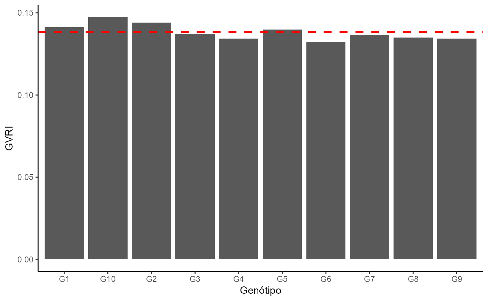

Calculation of the selection index for grain volume, based on the values for grain length, width and thickness
gvri(GEN, C, L, E, stat = "all", plot = F, ylab = "GVRI", xlab = "Genotype")The column with the genotype name
Grain length
Grain width
Grain thickness
Extract or not the average per genotype. Use `“all”` to obtain information on all the observations or “mean” to extract the average.
Logical argument. Plot a graph if TRUE
Y axis name
X axis name
Carvalho, I. R., de Pelegrin, A. J., Szareski, V. J., Ferrari, M., da Rosa, T. C., Martins, T. S., dos Santos, N. L., Nardino, M., de Souza, V. Q., de Oliveira, A. C., & da Maia, L. C. (2017). Diallel and prediction (REML/BLUP) for yield components in intervarietal maize hybrids. Genetics and Molecular Research, 16(3), gmr16039734. https://doi.org/10.4238/gmr16039734
# \donttest{
library(EstimateBreed)
set.seed(123)
data <- tibble::tibble(
Gen = rep(paste0("G", 1:10), each = 3),
Rep = rep(1:3, times = 10),
L = round(rnorm(30, mean = 3.2, sd = 0.3), 2),
C = round(rnorm(30, mean = 8.5, sd = 0.5), 2),
E = round(rnorm(30, mean = 2.1, sd = 0.2), 2)
)
with(data,gvri(Gen,C,L,E, stat="mean", plot=T))
#>
#> -----------------------------------------------------------------
#> Índice Relativo do Volume de Grão (Média por Genótipo)
#> -----------------------------------------------------------------
#> GEN gvri
#> 1 G1 0.1412662
#> 2 G10 0.1473476
#> 3 G2 0.1441590
#> 4 G3 0.1373132
#> 5 G4 0.1343354
#> 6 G5 0.1399094
#> 7 G6 0.1324485
#> 8 G7 0.1366020
#> 9 G8 0.1350247
#> 10 G9 0.1344342
#> Média Geral = 0.13828

# }